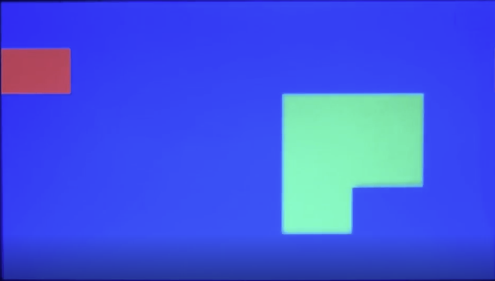

Idle State
The idle state is the controlled starting point of the game. In this state, the system holds the initial setup, prevents unintended movement, and waits for valid player input before transitioning into active gameplay.
- Sets a clean starting condition for the snake.
- Waits for player input before movement begins.
- Provides a stable transition into the running state.
